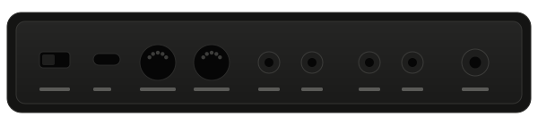

From a blank pad to a finished pattern, in four moves.
Deck has one method. Learn it once and every pattern starts the same way.
Tap the pattern in.
Hold Record and tap pads in time with the click. Deck lands each hit on the nearest sixteenth, or leaves your timing alone if you turn quantise off.
A pattern is one bar by default. Hold Record and press the last pad in the top row to make it two, four or eight.

Shape the sound while it plays.
Each knob does one job on the page you are on: pitch, decay, filter and drive on the first page, tone, level, pan and swing on the second. Hold Shift to switch.
Turn a knob while the pattern runs and the change lands on the next step, so you hear the difference in context rather than in silence.

Chain patterns into a song.
Hold two pattern pads and Deck links them. A chain can be up to eight patterns long and loops until you stop it.
The display shows which pattern is playing and which comes next, so you can build a song without stopping the beat.

Send it out.
USB, MIDI in and out, two CV outputs and clock in and out on the back. Deck keeps time on its own, or follows the clock of whatever it is plugged into.
Nothing needs a driver. Plug it into a computer and it shows up as a MIDI device.
